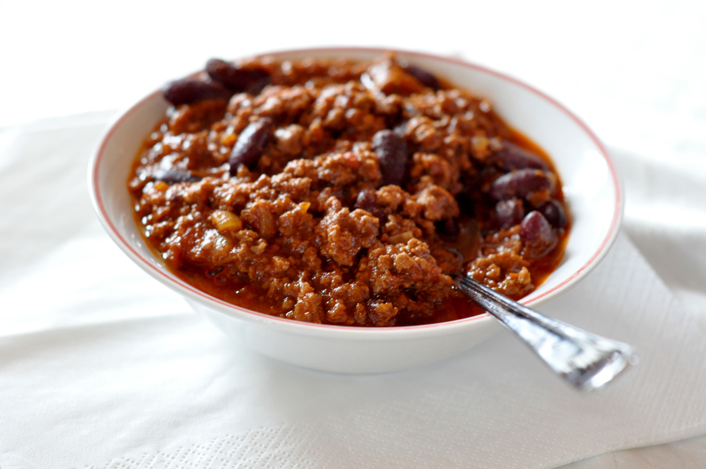

Home
Chili

Description
Delicious low effort chili
Ingredients
- 1 can red kidney beans
- 2 lbs ground beef
- 1 onion diced
- 1 jalapeno
- 4 cloves garlic
- 2 1/2 tbsp chili powder
- 1 teaspoon cumin
- 1 Green bell pepper
- 14.5oz crushed tomatoes
- 14.5oz canned diced tomatoes with juice
- 1 1/2 cups beef broth
- 1 cup beer
- 1 tbsp tomato paste
- salt and pepper
Steps
- mix the chili powder in with the ground beef
- brown the ground beef, onion, jalapeno, and garlic
- add the remaining ingredients and bring to a boil
- reduce heat and simmer uncovered for approximately 1 hour or until desired thickness